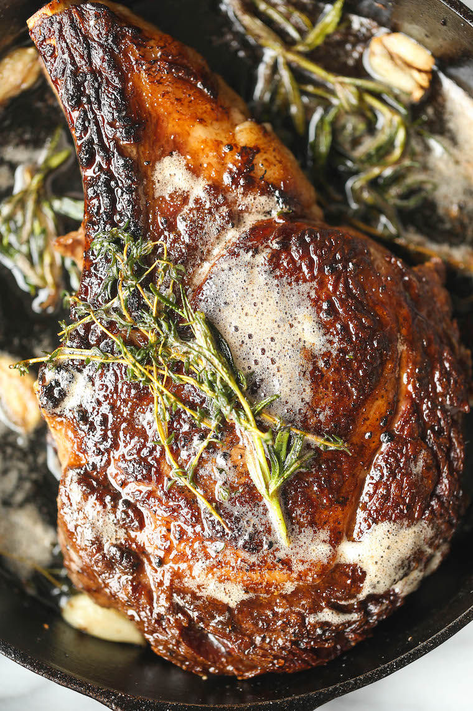

How to prepare the perfect Ribeye

Description
This delicious, mouthwatering, and medium rare
ribeye will have your guests begging for more!
Ingredients
- 16 Oz USDA Prime Ribeye
- Salt
- Pepper
- 4 Tbs of Butter
- 1 Garlic Clove
Steps
- Set pan to medium-high heat
- While you wait for the pan to heat, salt and
pepper the ribeye to your preference. Don't stop
until you can see the seasoning!
- Add one tablespoon of butter to pan.
- Add in the steak to the pan.
- Flip the steak every minute for a total of
6 minutes. This ensures even cooking!
- At the end of the sixth minute, turn the
heat to low and add the remaining Butter
and garlic clove.
- Using a spoon, base the extra fat on to the top
of your steak.
- When you're finished, let the steak rest for
10 minutes then enjoy!